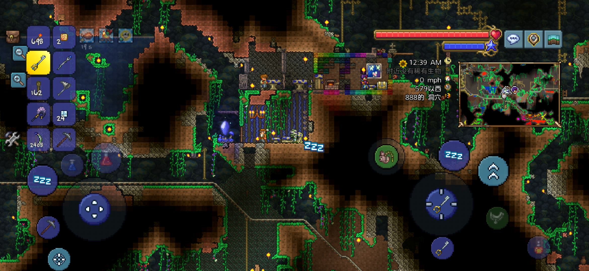

刚进入游戏时，你一无所有但潜力无限！第一天的核心目标是收集基础资源、搭建临时庇护所，为夜晚做准备。
1. 史莱姆是初期最常见的怪物，血量低，用木剑正面攻击即可轻松击败
2. 不要在夜晚来临前远离庇护所，泰拉瑞亚的夜晚会刷新更强的怪物（僵尸、恶魔眼）
3. 凝胶不仅能做火把，还是后期制作炸弹、药剂的重要材料，尽量多收集
不同资源有不同的用途，新手需要优先收集以下基础资源，为后续发展打基础：
| 资源名称 | 获取方式 | 主要用途 |
|---|---|---|
| 木材 | 敲击各种树木（任何工具都能收集，斧类效率更高） | 制作工作台、建筑、基础装备、火把 |
| 石块 | 用镐类挖掘地面的石头（木镐可挖掘普通石头） | 制作熔炉、石墙、基础建筑、石质装备 |
| 凝胶 | 击杀史莱姆（所有类型史莱姆都会掉落） | 制作火把、炸弹、粘性炸弹、各种药剂 |
| 铁矿/铅矿 | 用石镐挖掘地下的铁矿脉（红色/灰色矿石） | 制作铁镐、铁剑、铁盔甲（比石质装备更强） |
| 生命水晶 | 地下洞穴中随机生成（粉色水晶状） | 使用后永久增加20点生命值上限（最多增加到400点） |
泰拉瑞亚的一天分为白天（15分钟）、黄昏（2.5分钟）、夜晚（9分钟），不同时段的生存策略不同：
1. 永远不要在没有装备的情况下深入地下洞穴（地下有更危险的怪物和陷阱）
2. 每次探索前务必携带足够的火把（照明+防止刷怪）和木剑/铁剑（自卫）
3. 生命水晶是提升生存能力的关键，找到后立刻使用，不要囤积
4. 遇到未知的怪物，先观察其攻击方式，不要盲目冲上去硬拼